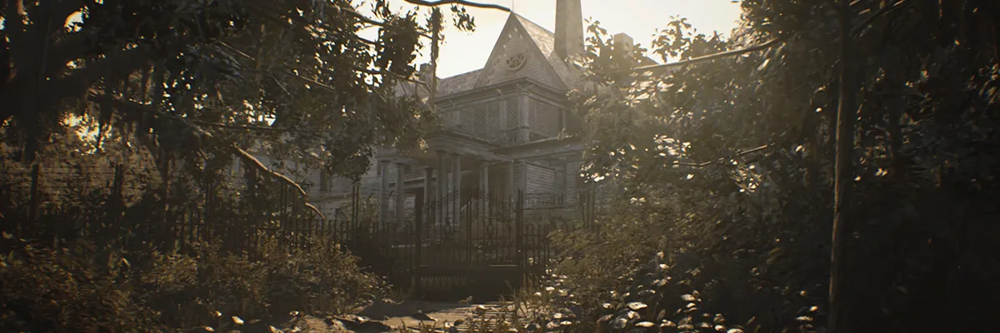

Resident Evil 7
Genero: Juego de terror y supervivencia.

Ambiente: Principalmente se desarrolla en una casa abandonada de Luisiana.
Protagonista: Ethan Winters, un hombre en busca de su esposa desaparecida.

Enemigos: Presenta principalmente a los miembros de la familia Baker como enemigos.
Armas y habilidades: Ofrece una variedad de armas y habilidades para enfrentar a los enemigos.
Duración: 10 - 12 horas.

Trailer Resident Evil 7:
Caratula Resident Evil 7:
Resident Evil 8
Genero: Combina elementos de terror y acción.
Ambiente: Tiene lugar en un pueblo europeo y sus alrededores, con un ambiente más abierto y variado.
Protagonista: Sigues con la historia de Ethan mientras se enfrenta a nuevos peligros en un entorno diferente.
Enemigos: Introduce a nuevos enemigos, como los hombres lobo y las criaturas sobrenaturales.

Armas y habilidades: Como el 7 pero presente un sistema de mejoras mas elaborado.
Duración: 10 - 12 horas.